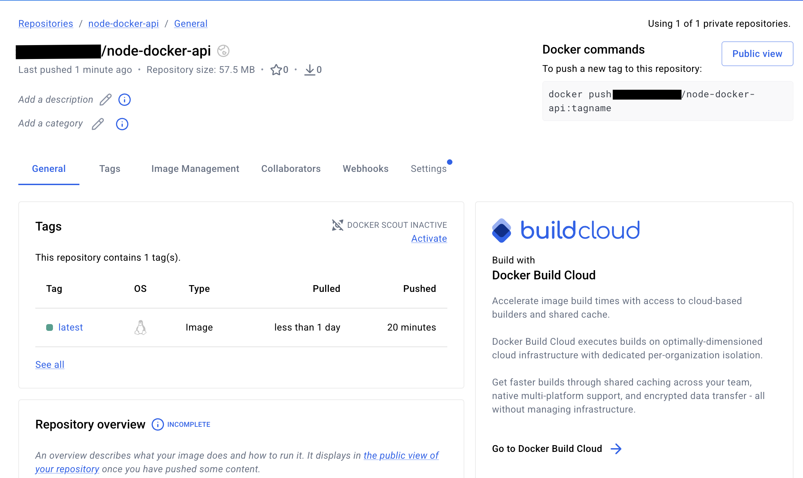

After building a Node.js application, running it locally on your machine is easy and simple.But, if another person run the same application on their computer it may not work because the required environment including the dependencies may not exist/installed on their machine.The solution to this is containerization.Containerizing an application means bundling the application code,dependencies, libraries and configuration files into a single, lightweight image which will run in any machine or cloud environmet.One of the most used tools for this process is Docker.
Now on, we will walkthrough how to containerize a node.js application and deploy it to the cloud.
1.Prerequisites
2.Setting up a Node.js app
3.Writing the Dockerfile
4.Building and testing the container
5.Preparing for deployment
6.Deploying to the cloud
First, you should have set up the following in your system.
you should have installed Node.js (v18 and higher) (https://nodejs.org/en/download) and npm in your system because before containerizing you can check whether the application runs properly in the local system.
To check the versions;
node -v
npm -v
Docker is the main tool we will use for containerizing.You should ensure that Docker desktop or Docker engine is installed depending on your system and it is in the running mode.You can confirm it by the following command.
docker --version
You will need a docker hub account to push your container image to the cloud. This will allow the deployment platform to pull and run the image.You can create an account through https://hub.docker.com
node-docker-api/
│
├── app.js
├── package.json
├── Dockerfile
├── .dockerignore
└── .env
In this tutorial, AWS is used as the cloud platform and the application is deployed to the cloud using AWS EC2 instances. But, you can use other cloud platforms such as AZURE, GCP as well.
You have to create an AWS or any cloud platform account to follow this tutorial.
Let's build a simple Node.js REST API. This example uses Node.js with Express.
cd node-docker-api
npm init -y
Edit app.js file.
const express = require("express");
const app = express();
app.get("/", (req, res) => {
res.send("Node.js Docker API is running");
});
app.get("/health", (req, res) => {
res.json({ status: "OK" });
});
app.listen(3000, () => {
console.log("Server running on port 3000");
});
PORT=3000
Add a start script.
{
"name": "node-docker-api",
"version": "1.0.0",
"main": "app.js",
"scripts": {
"start": "node app.js"
},
"dependencies": {
"express": "^5.1.0",
"dotenv": "^16.4.5"
}
}
node_modules
npm-debug.log
.git
.gitignore
.env
Start the server.
npm start
Server runs on:
Health check -
GET /health
Example:
Response:
{
"status": "OK"
}
To run this file in a container you should write a Dockerfile which defines how to build the container image.
Create a new file called Dockerfile and add the below content;
FROM node:24-alpine
WORKDIR /app
COPY package*.json ./
RUN npm install
COPY . .
EXPOSE 3000
CMD ["npm", "start"]
The Node.js version required to run the application. Instead of a full Linux system, alpine uses a minimal environment, making the container much smaller.
Sets the working directory(/app) inside the container.
This copies dependency definition files from the host machine to the container.The files are copied into the current working directory (/app).
This command installs the dependencies defined in package.json.
Copies the remaining application files from the host machine into the container.
Examples of copied files:
app.js
configuration files
source code
The files are copied into the /app directory.
This instruction documents that the container listens on port 3000.
It does not publish the port automatically but indicates that the application inside the container uses this port.
Defines the default command executed when the container starts.
npm start
Executes the start script defined in package.json, which typically starts the Node.js server.
Build the image;
docker build -t node-api .
Run the container;
docker run -p 3000:3000 node-api
Now, open http://localhost:3000 in your browser, and you should see the JSON message {"Node.js Docker API is running"}.
At this point, your app works in a container.
To deploy your application to the cloud, you should push your image to a container registry like Docker hub. Then, your cloud provider can pull the image for deployment.
Tag your image with a registry path.
Ex:
docker tag node-api your-dockerhub-username/node-docker-api:latest
Then log in and push the image.
docker login
docker push your-dockerhub-username/node-docker-api:latest
You can check the image in your cloud registry now.

Go to AWS console and type EC2 in the search bar and select the service.
Click launch instance.
Give a name to the instance
Select an Amazon Machine Image (AMI)
Choose an Amazon Linux AMI with pre-installed configurations for the operating system, application server, and applications needed to be deployed.
Select an instance type like t2.micro which is suitable for small-scale deployments.
Set up a key pair
Generate and download a key pair to SSH into your instance.Store the downloaded key in a secure location.
Configure Security group
Configure your security group to control the inbound and outbound traffic for the instance. In this case, create rules to allow HTTP(80) and HTTPS(443) traffic.
Click Launch instance button.
Go to the details of the EC2 instance and copy the public ip.
SSH into the instance using;
ssh -i [Path-to-key-pair-file] ec2-user@[server-public-ip]
NOTE: If you get a bad permission error, type this in the terminal to change the permission levels of the key pair.
chmod 400 "[Path-to-key-pair-file]]"
sudo yum install -y docker
sudo service docker start
sudo service docker status
docker run -d -p 80:3000 your-dockerhub-username/node-docker-api:latest
The -p 80:3000 flag maps port 3000 on the container to port 80 on the EC2 instance.
Open a browser tab, enter the public ip address of the EC2 instance and check whether the message "Node.js Docker API is running" is displayed on the browser page.
You have deployed a Node.js application on an AWS EC2 instance using Docker.This simple application process is the base for more-complicated, large-scale deployments.